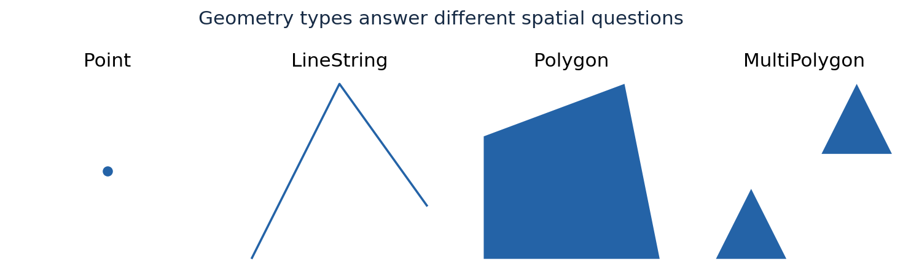
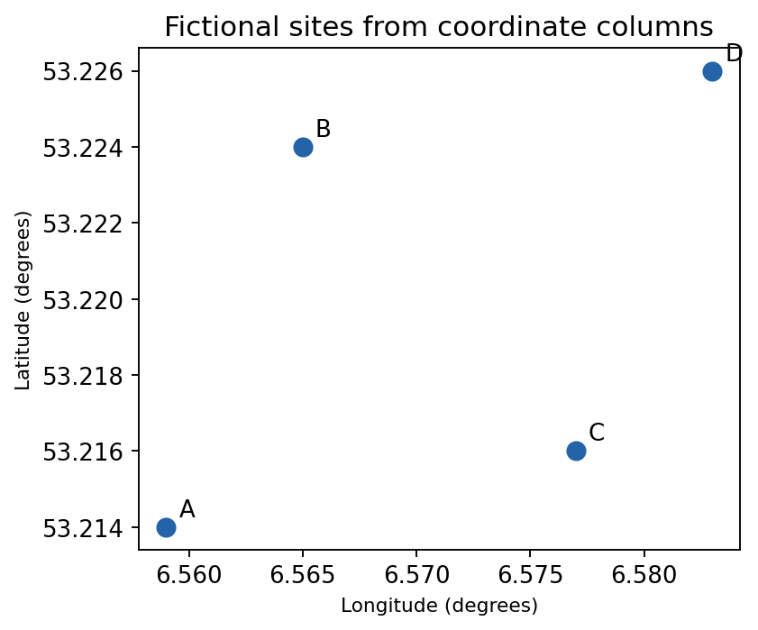
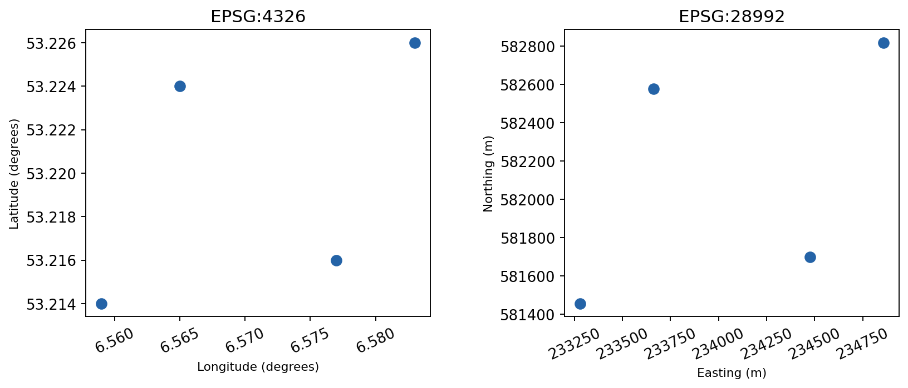
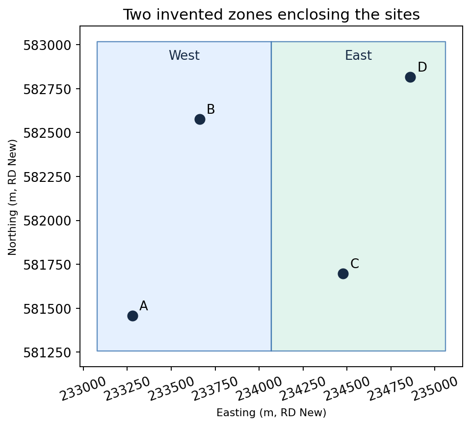
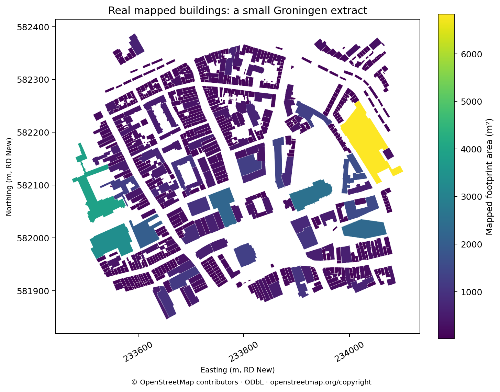
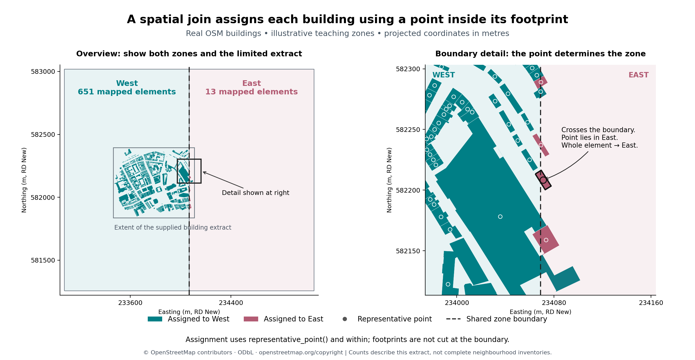
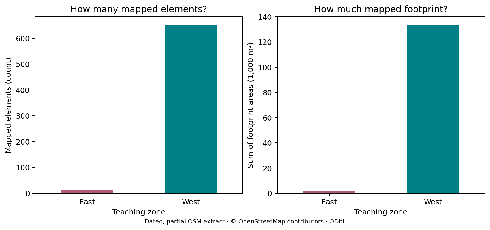
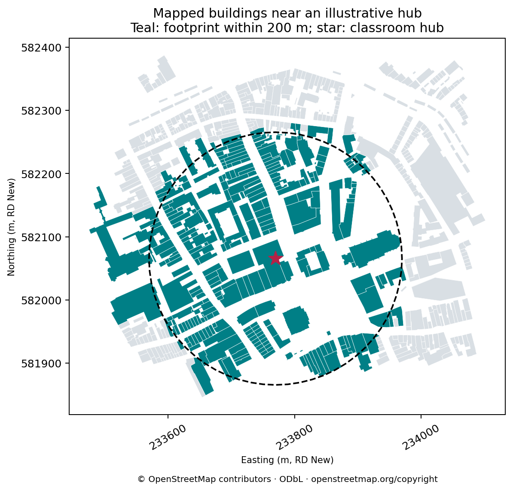

GeoPandas: Connecting Energy Data to Locations#

GeoPandas extends pandas with geometries and spatial operations. It connects attributes such as demand or capacity with points, lines, and polygons.
Explore the official introduction and user guide.
Your task#
Create 06-geopandas.ipynb. Start with fictional sites to learn coordinates and zones, then analyse real mapped Groningen buildings from OpenStreetMap. Assign them to teaching zones, explore proximity, and export a map and GeoPackage.
Complete the pandas and Matplotlib lessons first. The first examples use synthetic coordinates and energy values; their sites and zones are fictional. After creating the zones, we switch to real OSM building outlines. The zones remain illustrative throughout.
Learning objectives#
Explain geometry types and the active geometry column.
Create a GeoDataFrame from coordinate columns.
Distinguish assigning a CRS from transforming coordinates.
Calculate planar areas and distances in an appropriate projected CRS.
Use spatial joins and aggregate site attributes by zone.
Map numerical attributes and export spatial files.
Prepare the environment#
In Miniforge Prompt on Windows or Terminal on macOS, activate the existing course environment and install GeoPandas:
conda activate managing-data
mamba install -c conda-forge geopandas
Restart your notebook kernel after installation if necessary. Select Python (managing-data).
In the notebook, import:
from pathlib import Path
import pandas as pd
import geopandas as gpd
import matplotlib.pyplot as plt
from shapely.geometry import box
Tables with geometry#
A GeoDataFrame behaves like a pandas DataFrame but also contains geometry. Its active geometry column is used by operations such as .area, .distance(), and .plot().
Geometry |
Possible energy application |
|---|---|
Point |
A measurement location or a simplified installation location |
LineString |
A network route |
Polygon |
A building footprint or study boundary |
MultiPolygon |
An area made of several separate polygons |
A building represented as a point has no footprint area. Geometry choice determines which spatial questions can be answered.


Fig. 25 Points represent locations, lines routes, and polygons areas. These shapes are schematic.#
Create fictional site locations#
site_table = pd.DataFrame({
"site_id": ["A", "B", "C", "D"],
"longitude": [6.559, 6.565, 6.577, 6.583],
"latitude": [53.214, 53.224, 53.216, 53.226],
"annual_demand_mwh": [80.0, 120.0, 65.0, 150.0],
"pv_capacity_kwp": [25.0, 40.0, 20.0, 60.0],
})
sites = gpd.GeoDataFrame(
site_table,
geometry=gpd.points_from_xy(site_table["longitude"],
site_table["latitude"]),
crs="EPSG:4326",
)
print(sites[["site_id", "geometry"]])
print(sites.crs)
print(sites.geom_type)
points_from_xy() expects x then y: longitude then latitude for these coordinates. Reversing them creates incorrect locations.


Fig. 26 Longitude becomes x and latitude becomes y. These four sites are fictional.#
Understand coordinate reference systems#
A coordinate reference system (CRS) explains what coordinate numbers mean.
EPSG:4326 uses angular longitude and latitude coordinates in degrees.
EPSG:28992, Amersfoort / RD New, is a projected CRS suitable for local planar measurements in the European Netherlands, using metres.
Transform the coordinates:
sites_m = sites.to_crs("EPSG:28992")
print(sites_m.crs)
print(sites_m.geometry.x)
set_crs() describes the existing coordinates without changing their numbers. Use it only when the CRS is known but missing or incorrectly assigned. to_crs() actually transforms coordinates from an already defined CRS.
Do not assign EPSG:28992 directly to longitude and latitude values. That would mislabel degrees as metres. Projecting the geometry also does not change the original longitude and latitude attribute columns.


Fig. 27 to_crs() changes coordinates while preserving locations. Use projected metres for local planar distances and areas.#
Check geometry quality#
print("Missing geometries:", sites_m.geometry.isna().sum())
print("Empty geometries:", sites_m.geometry.is_empty.sum())
print("Valid geometries:", sites_m.geometry.is_valid.all())
print("Unique identifiers:", sites_m["site_id"].is_unique)
Valid geometry does not prove that a location is correct. Also inspect coordinate ranges, units, source information, and the resulting map.
Create illustrative zones#
For a self-contained exercise, construct two adjacent rectangles enclosing all sites. They are teaching zones, not real administrative or electrical boundaries.
xmin, ymin, xmax, ymax = sites_m.total_bounds
padding_m = 200.0
split_x = (xmin + xmax) / 2
zones = gpd.GeoDataFrame(
{"zone": ["West", "East"]},
geometry=[
box(xmin - padding_m, ymin - padding_m,
split_x, ymax + padding_m),
box(split_x, ymin - padding_m,
xmax + padding_m, ymax + padding_m),
],
crs=sites_m.crs,
)
zones["area_km2"] = zones.area / 1_000_000
print(zones[["zone", "area_km2"]])
Because the projected coordinates use metres, polygon area is returned in square metres. Dividing by one million converts it to square kilometres.


Fig. 28 These rectangles are teaching zones, not administrative or grid boundaries.#
From invented sites to OpenStreetMap#
The points and rectangles above introduced the spatial operations. From here onward we use real mapped building geometries from OpenStreetMap (OSM). We will no longer use the fictional demand or PV values. The rectangles remain our illustrative analysis zones so we can practise a spatial join; they do not become real neighbourhoods or grid areas.
OSM is a collaboratively maintained geographic database. Contributors map features using nodes, ways, and relations, with tags such as building=house. A node can represent a location; a closed way or a multipolygon relation can describe an area. Not every building has detailed tags, and mapped features may be missing or outdated. OSM supplies locations and descriptions, not measured electricity consumption.
The example uses a small extract around central Groningen. It is suitable for a classroom download, not a complete municipal inventory. Keep the extract and record its date so everyone can reproduce the same exercise.
Other useful starting points are PDOK, CBS open data, 3DBAG, and Copernicus Data Space. Check each dataset’s own coverage, date, licence, and units.
Load the classroom OSM extract#
The package includes managing-data/data/groningen-centre-buildings.geojson, retrieved on 6 November 2026. It contains valid polygon features tagged as buildings, read from a small OSM API extract. An OSM element identifier is preserved in osm_id. This identifies a mapped object, not necessarily a unique cadastral building.
Download the classroom GeoJSON if you are working from the website rather than a repository copy. Place it in a data folder alongside your notebook.
The loader supports notebooks saved either in the project root or in managing-data. If you put your notebook elsewhere, set the path explicitly.
candidates = [
Path("data/groningen-centre-buildings.geojson"),
Path("managing-data/data/groningen-centre-buildings.geojson"),
]
source_file = next((path for path in candidates if path.exists()), None)
if source_file is None:
raise FileNotFoundError("Copy the course's Groningen OSM extract into managing-data/data/.")
buildings = gpd.read_file(source_file)
print("Mapped building elements:", len(buildings))
print("CRS:", buildings.crs)
print(buildings[["osm_id", "building", "building:levels"]].head())
assert buildings.crs is not None
assert buildings["osm_id"].is_unique
assert buildings.geom_type.isin(["Polygon", "MultiPolygon"]).all()
assert buildings.geometry.is_valid.all()
buildings_m = buildings.to_crs("EPSG:28992")
buildings_m["footprint_m2"] = buildings_m.area
print(buildings_m["footprint_m2"].describe())
The area is mapped ground footprint, not total floor area, usable roof area, or annual energy demand. A building can have several floors. Even a valid polygon may have an incorrect outline or represent only part of a building.


Fig. 29 OSM building outlines replace the invented points. Colour represents mapped footprint area; it does not represent demand. Data: © OpenStreetMap contributors, ODbL.#
Optional: request a fresh extract with OSMnx#
OSMnx provides tools for querying OSM and returning GeoDataFrames. Install it in the existing data environment:
conda activate managing-data
mamba install -c conda-forge osmnx
With Miniconda, use conda install -c conda-forge osmnx. Restart the notebook kernel if needed. The following is an optional online alternative to the supplied extract. Do not run it repeatedly during class: public query services have finite capacity. If the request fails, keep using the supplied file rather than substituting invented geometries.
import osmnx as ox
ox.settings.use_cache = True
# OSMnx 2.x bounding-box order: left, bottom, right, top.
bbox = (6.563, 53.218, 6.571, 53.222)
fresh = ox.features_from_bbox(bbox, tags={"building": True})
fresh = fresh.loc[
fresh.geometry.notna()
& ~fresh.geometry.is_empty
& fresh.geometry.is_valid
& fresh.geom_type.isin(["Polygon", "MultiPolygon"])
].copy()
fresh["osm_id"] = [f"{kind}/{identifier}" for kind, identifier in fresh.index]
fresh = fresh.reset_index(drop=True)
print("Valid mapped polygon elements in the fresh query:", len(fresh))
A fresh Overpass query can return a different inventory from the supplied OSM API extract: the retrieval method, relation completeness, database date, and boundary selection can differ. Record these before comparing counts. This optional cell does not overwrite buildings_m; rerun the following analysis with an explicitly chosen source if you wish to compare.
Assign mapped buildings to our illustrative zones#
A building polygon can cross a zone boundary. For a simple counting rule, use one representative point inside each footprint, then assign that point to a zone. This assigns a whole mapped building element to one zone; it does not split its footprint between zones. A centroid is not guaranteed to fall inside every polygon, which is why we use representative_point().
building_points = buildings_m.copy()
building_points["geometry"] = buildings_m.geometry.representative_point()
assigned = gpd.sjoin(
building_points,
zones[["zone", "geometry"]],
how="left",
predicate="within",
)
print(assigned[["osm_id", "zone", "footprint_m2"]].head())
print("Unassigned elements:", assigned["zone"].isna().sum())
if assigned["osm_id"].duplicated().any():
raise ValueError("A mapped element matched multiple zones; inspect overlapping zones.")
if assigned["zone"].isna().any():
raise ValueError("Some representative points are outside the teaching zones or on their boundaries.")
A spatial join matches locations; a pandas merge matches attribute keys. Both inputs must use the same CRS. within excludes a point exactly on a boundary. Switching to intersects can create duplicate matches on shared boundaries. Decide and document your rule instead of silently double-counting.


Fig. 30 Real building outlines, illustrative zones: the assignment rule uses a representative point, not the majority of a polygon’s area. Data: © OpenStreetMap contributors, ODbL.#
Summarise mapped features by zone#
We can now count mapped elements and sum their footprint attributes. We cannot sum electricity demand, because no measured building demand was supplied for these real features.
zone_summary = assigned.groupby("zone").agg(
mapped_elements=("osm_id", "size"),
sum_footprint_m2=("footprint_m2", "sum"),
)
print(zone_summary)
assert zone_summary["mapped_elements"].sum() == len(buildings_m)
assert abs(zone_summary["sum_footprint_m2"].sum()
- buildings_m["footprint_m2"].sum()) < 1e-6
These are summaries of this extract, not complete zone-wide building statistics. Its coverage is smaller than our teaching rectangles. The sum of footprint areas can also count overlapping polygons more than once; for the area occupied by their combined geometry, compare:
print("Sum of mapped areas (m²):", buildings_m.area.sum())
print("Area of their union (m²):", buildings_m.geometry.union_all().area)
Neither value is an energy demand estimate. Estimating demand needs additional data and assumptions about building use, floor area, occupancy, and intensity.


Fig. 31 Counts and area answer different questions. Results describe a dated extract inside illustrative zones. Data: © OpenStreetMap contributors, ODbL.#
Calculate distances and buffers with real footprints#
Choose an illustrative candidate hub coordinate near the city centre. This is a classroom location, not an identified energy installation. The building geometries remain real OSM features.
hub = gpd.GeoDataFrame(
{"hub": ["Illustrative candidate"]},
geometry=gpd.points_from_xy([6.5665], [53.2194]),
crs="EPSG:4326",
).to_crs(buildings_m.crs)
radius_m = 200.0
hub_point = hub.geometry.iloc[0]
buildings_m["distance_to_hub_m"] = buildings_m.distance(hub_point)
nearby = buildings_m.loc[buildings_m["distance_to_hub_m"] <= radius_m].copy()
hub_buffer = hub.copy()
hub_buffer["geometry"] = hub_buffer.buffer(radius_m)
print("Mapped elements within the threshold:", len(nearby))
print(nearby[["osm_id", "distance_to_hub_m"]].head())
.distance() here measures the shortest planar distance from the hub point to each footprint; it is zero when the point is inside that footprint. This differs from distance to a building’s centre. A footprint that touches the buffer qualifies even when its representative point is outside it. These are straight-line distances, not road routes, cable lengths, or evidence of connection feasibility.
Make and export a map#
fig, ax = plt.subplots(figsize=(8, 6), layout="constrained")
buildings_m.plot(ax=ax, color="#d9dfe4", edgecolor="white", linewidth=0.3)
nearby.plot(ax=ax, color="#007f86", edgecolor="white", linewidth=0.3)
hub_buffer.boundary.plot(ax=ax, color="black", linestyle="--")
hub.plot(ax=ax, marker="*", color="#b52246", markersize=180)
ax.set(title="Mapped buildings near an illustrative hub\nTeal: footprint within 200 m; star: classroom hub",
xlabel="Easting (m, RD New)", ylabel="Northing (m, RD New)")
ax.set_aspect("equal")
ax.ticklabel_format(useOffset=False, style="plain")
ax.tick_params(axis="x", rotation=30)
ax.xaxis.set_major_locator(plt.MaxNLocator(4))
fig.text(0.5, -0.03,
"© OpenStreetMap contributors · ODbL · openstreetmap.org/copyright",
ha="center", fontsize=8)
plt.show()


Fig. 32 A footprint qualifies by its shortest distance to the point. The extract is incomplete outside the small query area. Data: © OpenStreetMap contributors, ODbL.#
output_directory = Path("outputs")
output_directory.mkdir(exist_ok=True)
output_file = output_directory / "groningen_osm_teaching.gpkg"
buildings_m.to_file(output_file, layer="buildings", driver="GPKG", index=False)
reloaded = gpd.read_file(output_file, layer="buildings")
assert len(reloaded) == len(buildings_m)
assert reloaded.crs == buildings_m.crs
fig.savefig(output_directory / "groningen_osm_hub.png", dpi=300, bbox_inches="tight")
GeoPackage preserves geometry, attributes, and CRS, and can be opened in QGIS. Keep attribution and the data licence alongside exported layers. The default write mode replaces an existing layer of the same name; use a dedicated teaching filename.
Optional practice#
Change the proximity assumption#
Compare 100 m, 200 m, and 300 m thresholds. Count mapped elements near the hub using footprint distance, then using representative-point distance. Explain why the counts can differ.
Inspect missing descriptions#
Inspect building and building:levels. Which values are missing or ambiguous? Explain why building=yes does not establish residential use and why a missing floor count should not automatically mean one floor.
Investigate a boundary case#
Place a point exactly on split_x, between ymin and ymax, with the projected CRS. Compare within and intersects. Explain how duplicated matches would affect a grouped total.
Further reading and data credit#
OSM elements and map features.
Building geometries: © OpenStreetMap contributors, available under the Open Database License (ODbL). See the included data README for the retrieval and processing steps.